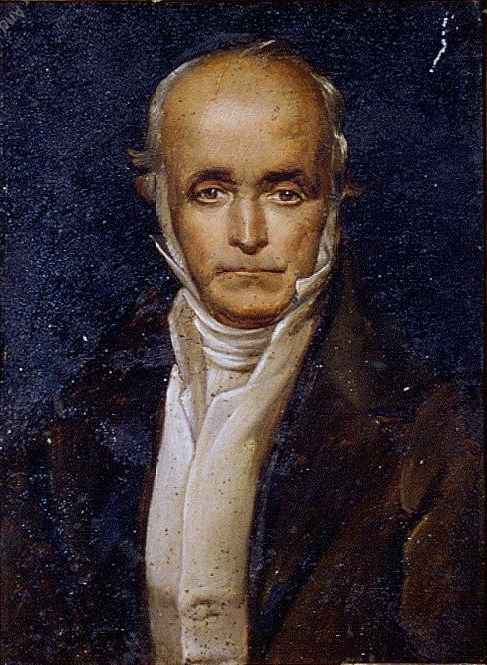
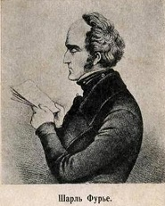

В своих произведениях он с особой ненавистью обличал торговцев, их нечестные приемы, спекуляцию. Он клеймил конкуренцию, бесплановость, беспорядочность производства при капитализме. Фурье писал, что при капиталистическом строе все рабочие страдают от
безработицы и голода, находятся в нищете, хотя их руками произведено много продуктов.
 Фурье предлагал преобразовать капиталистическое общество. Он призывал всех устраивать фаланги и построить для фаланг новые здания по выработанному им плану. Фалангой в античном мире
назывался военный строй, движение треугольником с копьями, выдвинутыми вперед. Такая фаланга врезалась в ряды противника и разбивала его строй. Фурье считал, что если организовать фаланги, общины, они врежутся в старый мир и приведут
к его переустройству
Не будет больше разделения на город и деревню. Все будут жить в фаланстерах и заниматься как физическим, так и умственным трудом. Работа должна производиться по плану. В ней будут участвовать все. Для того чтобы труд был привлекательным
и не утомлял, работник несколько раз в день перейдет от одной работы к другой, соревнуясь с другими работниками, чтобы достичь лучших результатов.
 Но в фаланге сохранялись элементы капиталистических отношений. Прибыли предприятия там должны были распределяться между участниками фаланги и капиталистами. Труд и талант (работники)
должны были, получать 2/3 дохода, а 1/з предназначалась капиталистам, которые вложили бы деньги в постройку фаланстера.
Фурье резко критиковал пороки и бедствия капитализма и в то же время в очень ярких красках рисовал будущее общество. Он писал о том, что люди будут жить до 144 лет, новые виды животных будут населять мир, в частности «антикиты»,
которые будут обслуживать людей, что выведут особую породу «антитигров» и «антикрокодилов», которые будут; покорно выполнять волю человека. Он говорил, что вода в морях и океанах потеряет соленый вкус, будет сладка, как лимонад.Интересна
мысль Фурье о том, что вокруг Земли можно запустить четыре огромные искусственные луны и что тогда по ночам будет так же светло, как и днем. Фурье мечтал и о том, что миллионы людей поведут наступление на Сахару и другие пустыни и
превратят их в цветущие сады.
Однако Фурье, как и Сен-Симон, отрицал классовую борьбу. Он считал, что в Европе есть много богатых людей, Которые могут дать деньги для устройства фаланг. Фурье, например, писал императору Наполеону
I, банкиру Ротшильду и другим богачам письма с просьбой о содействии. Он даже назначил постоянные приемные часы и ждал, но безуспешно, когда же богачи появятся в его квартире, чтобы принять участие в перестройке мира.